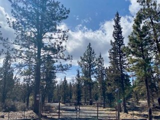
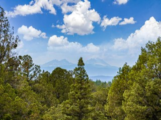
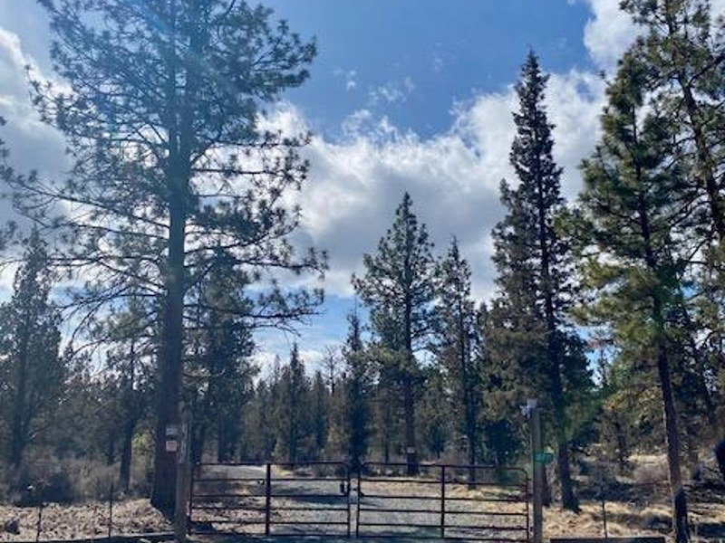
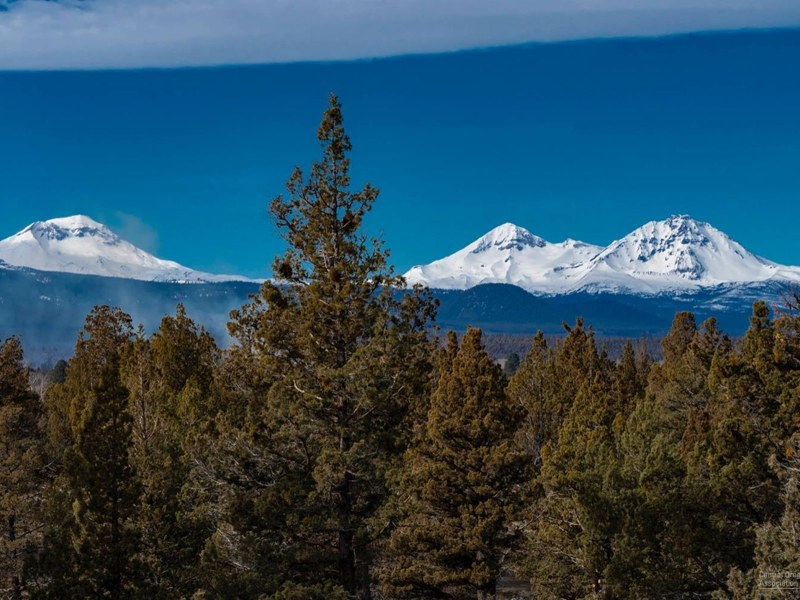
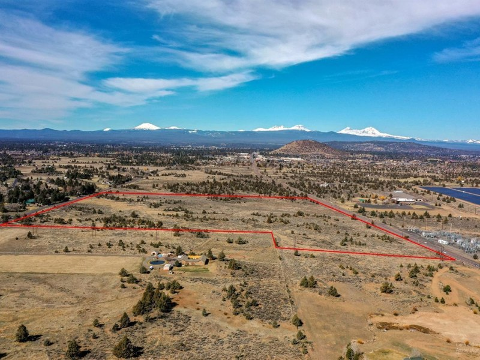

Prepared for the owner · Tumalo Acreage · Zoning-Aware Land CMA
18705 Tumalo Reservoir Road
Bend, Oregon 97703 · Tumalo · 40-Acre EFUTRB · Nonfarm-Dwelling Entitlement Confirmed · CU-09-73

Subject · ~40 acres (39.97 net / 40.00 gross, Parcel 2, Partition Plat 2010-04) · Ponderosa Pine + Old Growth Juniper · BLM on two sides · Zoning: EFUTRB + LM + WA · Photo from 2021 MLS listing (canceled)
Dwelling Right
CU-09-73 Confirmed
Structures
2 · ~200 sf ea.
Well / Septic
Well: Yes · Septic: not installed
Supported Value Range · Confirmed Buildable Homesite · Dry EFUTRB · Twin-Anchored
$1,100,000 to $1,180,000
The subject is dry (non-irrigated) EFUTRB, valued against dry EFUTRB comps led by the next-door twin parcel at 18715 Tumalo Reservoir Rd (39.97 ac, sold $1,030,000 in 2021, time-adjusted upward). Three converging methods produce a supported range of $1,050,000 to $1,150,000, with a point estimate near $1,100,000. Recent irrigated comps (93rd St, Collins Rd) serve as a water-adjusted current-conditions check. Bear Creek (57 ac, no entitlement, 2021) anchors the no-entitlement floor at $12,908/ac. Market trend: land values boomed 2020-22 then plateaued 2022-26; older dry comps carry a modest upward time adjustment.
Recommended list price · $1,195,000 (~$29,900/acre). Priced above the supported range to allow negotiation room; expected sale ~$1,100,000-$1,150,000. Anchored on the next-door twin (18715, $1,030,000 in 2021) time-adjusted, cross-checked against water-adjusted irrigated comps, and confirmed above the no-entitlement floor. The nonfarm-dwelling entitlement is confirmed vested per Deschutes County Declaratory Ruling 247-21-000857-DR (NOD mailed 12/13/2021, now final).
Presented by Matt Ryan · Owner & Principal Broker · Ryan Realty · 541.213.6706
Subject Property
At a glance
Forty acres of treed rural land in Tumalo. Ponderosa Pine and Old Growth Juniper, with BLM public land bordering two sides. Zoned Exclusive Farm Use, Tumalo-Redmond-Bend subzone (EFUTRB), with Landscape Management (LM) and Wildlife Area (WA, deer winter range) overlays. Legal Lot of Record confirmed by Deschutes County DIAL. Tax approximately $3,200/year.
The parcel is not bare land. It carries two permitted ~200 sf structures, a domestic well, power, a gravel drive, and a confirmed nonfarm-dwelling entitlement (CU-09-73), each detailed in the inventory below and on the Zoning & Entitlement page.
Infrastructure inventory
- Office structure: ~200 sf, finished, power + plumbing (finaled permits)
- Second structure: ~200 sf, unfinished, power + water run to it (finaled permits)
- Well: OWRD well log #58945, domestic, drilled Feb 2010, 495 ft deep, first water at 451 ft
- Septic: no septic system installed; site evaluation only, buyer installs (~$15-30k)
- Power: electricity to the property (finaled electrical permits 2020, 2021)
- Access: gravel drive from Tumalo Reservoir Rd (road-access permit 2014)
- Dwelling entitlement: CU-09-73 nonfarm dwelling, confirmed vested per DR 247-21-000857-DR (NOD 12/13/2021, final)
- Views: potential Cascade Mountain views with strategic tree removal, territorial views now
- BLM adjacency: borders public land on two sides
- Water rights: none (no irrigation, which is what enables the nonfarm-dwelling pathway under EFUTRB)
- Parcel: acct 265738 · taxlot 171103A000602 · ~40 ac (39.97 net)
Why this CMA uses per-acre pricing
This is a land transaction. The market prices acreage in this tier by the acre. Every comp in this analysis is evaluated on a per-acre basis, with explicit adjustments for zoning match, water rights, dwelling entitlement status, lot size, infrastructure, location, and BLM adjacency.
This report uses a per-acre adjustment grid, the framework appraisers use for bare-land and rural land valuations, with three converging methods: a $/acre tier model, a comparable-anchor model, and a physical-adjustment model. All comps are verified EFUTRB (subject-matched base zone) via Deschutes County GIS spatial query.
The value crux: dry EFUTRB with a confirmed dwelling right
Under Oregon EFU law, irrigated parcels classified as "high-value farmland" typically bar nonfarm dwellings. The subject's lack of irrigation water rights is precisely what kept it eligible for the nonfarm-dwelling conditional use pathway that produced CU-09-73. Dry status is both the legal basis for the dwelling entitlement and the reason this parcel is valued against dry EFUTRB comps, not irrigated ones. A buyer evaluating irrigated comps as direct comparisons misreads the comp set.
The nonfarm-dwelling entitlement (CU-09-73) is confirmed vested per Deschutes County Declaratory Ruling 247-21-000857-DR, the county mailed its Notice of Decision on 12/13/2021 and the ruling is now final. This parcel is a buildable ~40-acre EFUTRB homesite with BLM privacy on two sides, a confirmed domestic well (OWRD #58945, 495 ft deep), and a confirmed right to construct a dwelling. Completing the dwelling requires standard building permits and septic installation, within the WA and LM road setbacks detailed on the zoning page. No floodplain, no wetlands, and no steep slope.
Listing history
| Date | Status | List Price | Close Price | $/Acre | Notes |
|---|
| 2016-01-29 (closed) | Sold | $575,000 | $535,000 | $13,375/ac |
2016 market, prior ownership (Rock Springs era). Not a comp for current value. Shown for record only. |
| ~2018 (expired) | Expired | $825,000 | — | — |
Listed at $825,000, expired without a sale. |
| 2021 (canceled) | Canceled | $1,600,000 | — | — |
Listed at $1,600,000 (~$40,000/ac) by current owner Tumalo Pines LLC. No sale. Above market per comp evidence. |
Subject · ~40 Acres (39.97 net) · EFUTRB + LM + WA · Nonfarm-Dwelling CU-09-73 Confirmed · Not Currently Listed
18705 Tumalo Reservoir Road
Bend, Oregon 97703 · Tumalo · Deschutes County Acct 265738 · Taxlot 171103A000602 · Owner: Tumalo Pines LLC

From prior MLS listings: "Rare 40 treed acres in Tumalo bordering public lands on two sides. Potential Cascade Mountain views with some strategic tree removal. New well, power to property, and gravel drive from Tumalo Reservoir Road. Extremely private and peaceful with large Ponderosa Pine trees." (2016) // "Tall Pines and Old Growth Juniper provide a private and serene location. BLM is out the back door." (2018) // Current status: two ~200 sf structures (office finished with power and plumbing, finaled permits 247-21-009185-PLM; second structure unfinished with power and water), domestic well (OWRD #58945, 495 ft deep, drilled 2010), no septic installed (site evaluation only), gravel drive. Nonfarm-dwelling CU-09-73 confirmed vested per Declaratory Ruling 247-21-000857-DR (NOD 12/13/2021, final).
Last Sold
Jan 2016 · $535,000
Prior List (Exp.)
~2018 · $825,000
Prior List (Can.)
2021 · $1,600,000
Rec. List Price
$1,195,000 · $29,900/ac
Office Struct.
~200 sf · power + plumbing (finaled)
2nd Structure
~200 sf · power + water (finaled)
Well / Septic
Well: OWRD #58945, 495 ft · Septic: not installed
Photos from prior 2016 and 2021 MLS listings. Current-condition photos needed for any new listing. Structures, permits, and entitlement status per Deschutes County records. Well: OWRD well log #58945. Septic: no system installed per county permit records, site evaluation only, buyer installs. Zoning confirmed via Deschutes County DIAL and GIS spatial query. Legal Lot of Record status confirmed DIAL. Acreage: 39.97 net / 40.00 gross per Partition Plat 2010-04.
Subject Parcel · Aerial View with County Boundary
Authoritative parcel boundary for taxlot 171103A000602 overlaid on satellite imagery. Boundary sourced from Deschutes County GIS (Dial2_Taxlots MapServer). Parcel: ~40 acres (39.97 net / 40.00 gross per Partition Plat 2010-04). No boundary approximation used.

Boundary: Deschutes County GIS · Dial2_Taxlots/MapServer/0 · taxlot 171103A000602 · 11 vertices · EPSG:4326. Imagery: Google Maps satellite. Overlay: yellow (#FFFF00) 4 px outline, 19% fill. Centroid: lat 44.13495, lng -121.3896. Parcel dimensions approximately 0.40 mi east-west × 0.28 mi north-south. Parcel 2, Partition Plat 2010-04. BLM adjacency borders visible on south and west edges. Next-door twin parcel 18715 Tumalo Reservoir Rd (Parcel 1) is the primary dry EFUTRB anchor comp.
Zoning & Entitlement
EFUTRB Exclusive Farm Use, Tumalo-Redmond-Bend Subzone
The base zone for this parcel. EFU in Oregon is the state's highest-protection agricultural designation. In the EFUTRB subzone, permitted uses include farm use, forest use, and limited non-farm dwellings under specific conditional-use pathways. Cannot be subdivided below 40 acres. No lot-split optionality. Authority: Deschutes County Code (DCC) 18.16.
Key distinction: the EFUTRB subzone applies to non-irrigated land in the Tumalo-Redmond-Bend area. Irrigated land in the same area is classified "high-value farmland," which bars nonfarm dwellings entirely. The subject's lack of irrigation water rights is the legal basis for the CU-09-73 nonfarm-dwelling entitlement.
LM Landscape Management Overlay
Applies to the full parcel. Requires design review and a 100-foot setback from designated scenic corridors (Tumalo Reservoir Road is a state scenic highway corridor). New structures must demonstrate visual compatibility with the landscape. Authority: DCC 18.84.
WA Wildlife Area Overlay, Deer Winter Range
The WA overlay designates this parcel as deer winter range habitat. Key constraints: a 300-foot minimum setback from Tumalo Reservoir Road centerline for new structures, wildlife-compatible fencing (max 42 inches tall, no woven wire on top), and any dwelling must be sited to minimize habitat disruption. The WA overlay also enforces the 40-acre minimum lot size. No partition. Authority: DCC 18.88.
Nonfarm-Dwelling Entitlement · CU-09-73 · Confirmed Vested
2009 to 2015: Deschutes County approved nonfarm-dwelling Conditional Use CU-09-73 on the parcel (then Rock Springs Guest Ranch), permitting a single nonfarm dwelling on the non-irrigated EFUTRB land. The original owner obtained extensions in 2014 and 2015, keeping it alive through ownership changes.
2021, confirmed vested: Owner Tumalo Pines LLC filed Declaratory Ruling 247-21-000857-DR. The county found CU-09-73 a valid existing permit with the nonfarm-dwelling use authorized under its ordinances (NOD mailed 12/13/2021, now final). Recorded permits: finaled electrical (2020, 2021), finaled plumbing (Nov 2021), road-access permit (2014). The full verbatim findings are reproduced in the supplemental documentation.
Declaratory Ruling · 247-21-000857-DR · Verified
Source: Deschutes County WebLink document 1012684. Owner: Tumalo Pines LLC. Subject: 18705 Tumalo Reservoir Rd (taxlot 171103A000602, acct 265738). NOD mailed 12/13/2021. Decision read directly from the Findings and Decision, 2026-06-04. The entitlement is not pending, not conditional on any unverified step.
Building constraints, all GIS-verified, no fatal flaws
A home is buildable. Beyond the WA 300-ft and LM 100-ft road setbacks noted above, the only items to work around are the two canal easements (Tumalo Feed Canal and Lacy Lateral) and wildfire defensible space. A buyer installs septic (~$15-30k). No floodplain, no wetlands, and no steep slope (all GIS-verified), and the prior listing identified two potential building sites.
What EFUTRB means for the comp set
Parcels zoned MUA-10 (Multiple Use Agriculture, 10-acre min) or TUR-5 (Tumalo Urban Reserve, 5-acre min) build by right and can be partitioned. They sell at a higher $/acre because of that optionality. Using MUA-10 or TUR-5 comps to value an EFUTRB parcel inflates the result. All primary comps in this CMA are verified EFUTRB via Deschutes County GIS spatial query. See comp table for zone column.
Hunting, Recreation & Landowner Tags
For non-irrigated acreage, recreation is a real value driver, and this parcel has the profile to support it. It sits in mapped mule deer winter range, inside an active ODFW hunt unit, with public land on two sides. The figures below trace to Oregon Administrative Rules, ODFW, and Deschutes County GIS. The landowner-tag specifics sit right at the program's acreage threshold, so they should be confirmed with ODFW before they are relied upon.
Unit 34 Upper Deschutes Wildlife Management Unit
The parcel lies in ODFW's Upper Deschutes Unit, east of the Cascade crest, in mule deer range. The Wildlife Area overlay confirmed on the prior page designates it as part of the Tumalo Deer Winter Range, a 63,027-acre mapped winter range. That overlay governs building siting. It is not a hunting restriction.
Hunting access
The parcel is outside every Deschutes County No Shooting District, confirmed by county GIS at the parcel, so the owner and permitted guests may hunt the land with the proper ODFW licenses and tags. BLM public land borders the parcel on two sides, adding walk-in access to public ground. BLM and Forest Service roads in the winter range close seasonally in winter to protect wintering deer, which affects winter vehicle access on the public land rather than fall hunting on the parcel.
Landowner Preference tags
At roughly 40 acres, the parcel meets the threshold for Oregon's Landowner Preference Program. A qualifying landowner and immediate family are eligible for antlerless deer (600-series) and antlerless elk landowner tags under OAR 635-075-0001. Buck mule deer landowner tags require 160 contiguous acres and are not available at this size. Buck deer remains huntable on the parcel through a regular drawn Unit 34 controlled tag.
An active landowner-tag unit
Unit 34 issues landowner-preference tags. ODFW's 2025 allocation listed 198 landowner buck tags plus 49 archery tags for the unit. The unit's mule deer herd is at 56% of population objective, which places it in the tighter tag tier and keeps buck tags capped.
Confirm with ODFW
Recorded acreage is 40.00 gross and 39.97 net, right at the 40-acre minimum. Eligibility and current-year tag availability should be verified with ODFW's licensing and controlled-hunt desk before they are relied upon.
Where the Comps Sit
Six comparable land sales mapped with the subject as the red S pin. The next-door twin (18715) is the primary dry EFUTRB anchor. Three MUA-10 and TUR-5 parcels were excluded after GIS zoning verification, their zones allow by-right construction and subdivision, inflating $/acre vs. EFUTRB.

Marker key
S
Subject
18705 Tumalo Reservoir Rd · ~40 ac · EFUTRB · dry
1
18715 Tumalo Reservoir (TWIN)
39.97 ac · EFUTRB · dry · 3/2021 · $1,030,000 · ANCHOR
2
19155 Pinehurst
19.87 ac · EFUTRB · dry · 7/2020 · $350,000
3
21700 Bear Creek (FLOOR)
57.33 ac · EFUTRB · dry · no entitlement · 5/2021 · $740,000
4
65799 93rd St
32.69 ac · EFUTRB · 27 ac irr. · 5/2026 · $1,000,000
5
64859 Collins Rd
25.6 ac · EFUTRB · 20 ac irr. · 9/2025 · $860,000
6
23250 Walker
40.01 ac · EFUTRB · 7.05 ac irr. · mfg home · 11/2024 · $699,900
X
Excluded (wrong zone)
18313 Tumalo Res. (MUA-10) · 64145 Old Bend Redmond (MUA-10) · 19975 Tumalo Rd (TUR-5)
EFUTRB Comparable Land Sales, Per-Acre Analysis
Three dry EFUTRB comps (primary) + three irrigated comps (current-conditions check). All verified EFUTRB via Deschutes County GIS. Three MUA-10 and TUR-5 parcels excluded (shown below).

18715 Tumalo Reservoir (TWIN)
39.97 ac · dry EFUTRB · 0.2 mi · Mar 2021
$1,030,000 $25,769/ac
19155 Pinehurst
19.87 ac · dry EFUTRB · 7/2020 · DOM 134
$350,000 $17,615/ac
21700 Bear Creek (FLOOR)
57.33 ac · dry · no entitlement · 5/2021
$740,000 $12,908/ac

65799 93rd St
32.69 ac · 27 ac irr. · 5/2026 · DOM 40
$1,000,000 $30,590/ac

64859 Collins Rd
25.6 ac · 20 ac irr. · 9/2025 · DOM 0
$860,000 $33,594/ac

23250 Walker
40.01 ac · 7.05 ac irr. · mfg home · 11/2024
$699,900 $17,493/ac
| Address |
Zone |
Acres |
Water |
Close $ |
$/Acre |
Date |
Role |
| 18705 Tumalo Reservoir Rd |
EFUTRB+LM+WA |
~40 (39.97) |
None (dry) |
$1,195,000 |
$29,900 |
— |
rec. list |
| 18715 Tumalo Reservoir (TWIN) |
EFUTRB |
39.97 |
None (dry) |
$1,030,000 |
$25,769 |
Mar 2021 |
PRIMARY ANCHOR, next door, dry, own entitlement + barn |
| 19155 Pinehurst |
EFUTRB |
19.87 |
None (dry) |
$350,000 |
$17,615 |
Jul 2020 |
Dry EFUTRB · small · entitled |
| 21700 Bear Creek |
EFUTRB |
57.33 |
None (dry) |
$740,000 |
$12,908 |
May 2021 |
NO-ENTITLEMENT FLOOR, bare, no CUP, large |
| 65799 93rd St |
EFUTRB |
32.69 |
27 ac irr. |
$1,000,000 |
$30,590 |
May 2026 |
Most recent · irrigated check |
| 64859 Collins Rd |
EFUTRB |
25.6 |
20 ac irr. |
$860,000 |
$33,594 |
Sep 2025 |
Tumalo-proximate irrigated check |
| 23250 Walker |
EFUTRB |
40.01 |
7.05 ac irr. |
$699,900 |
$17,493 |
Nov 2024 |
Irrigated + mfg home · low for location (east) |
Excluded (wrong zone):
| Address | Zone | Acres | $/Acre | Date | Why excluded |
| 18313 Tumalo Reservoir Rd |
MUA-10 |
9.63 |
$98,650 |
Apr 2025 |
MUA-10: builds by right, can subdivide. Inflated $/ac vs. EFUTRB. |
| 64145 Old Bend Redmond Hwy |
MUA-10 |
36.28 |
$53,749 |
Jan 2025 |
MUA-10: by-right dwelling + subdivision optionality |
| 19975 Tumalo Rd |
TUR-5 |
80.0 |
$43,738 |
Feb 2025 |
TUR-5: subdivisible residential, structurally different from EFU |
Per-Acre Adjustment Grid · 3-Indicator Reconciliation
Three converging indicators anchor the value conclusion. The Twin (18715) is the primary dry EFUTRB anchor. Irrigated comps (93rd, Collins) are used as a water-adjusted current-conditions check. Bear Creek ($12,908/ac, no entitlement) sets the no-entitlement floor. Positive adj. = comp inferior to subject. Negative = comp superior.
| Comp |
Zone |
Raw $/Ac |
Time Adj. |
Size Adj. |
Water Adj. |
Ent. Adj. |
BLM+Loc. |
Barn/Struct. |
Adj. $/Ac |
Implied |
| 18715 TWIN (39.97 ac, dry, barn, 0.2 mi, 3/2021) |
EFUTRB |
$25,769 |
+$1,500 |
$0 |
$0 |
$0 |
$0 |
+$1,400 |
$28,669 |
$1,146,000 |
| 93rd St (32.69 ac, 27 ac irr., 5/2026) |
EFUTRB |
$30,590 |
$0 |
-$700 |
-$6,500 |
$0 |
+$3,000 |
+$500 |
$26,890 |
$1,075,000 |
| Collins Rd (25.6 ac, 20 ac irr., 9/2025, 1.7 mi) |
EFUTRB |
$33,594 |
$0 |
-$1,200 |
-$5,500 |
$0 |
+$2,000 |
+$500 |
$29,394 |
$1,175,000 |
| Bear Creek FLOOR (57.33 ac, dry, no ent., 5/2021) |
EFUTRB |
$12,908 |
+$1,000 |
+$2,000 |
$0 |
+$6,500 |
+$4,000 |
+$500 |
$26,908 |
$1,076,000 |
| 3-indicator convergence: Twin $1,146k · irrigated water-adj. avg. $1,125k · Bear Creek floor-adj. $1,076k |
Range: $1,050k-$1,150k · Point ~$1,100k · List $1,195k |
Adjustment rationale
Time adjustment: Market boomed 2020-22, then plateaued 2022-26. Twin (3/2021) and Bear Creek (5/2021) are at/near the early plateau. Modest +5-10% upward adjustment applied to 2020-21 dry comps to reflect June 2026 conditions. Recent irrigated comps (2025-26) get zero time adjustment.
Size: Larger parcels sell for less per acre. Small downward adjustment on comps under 30 acres. Bear Creek (57 ac) gets a positive adjustment, larger parcels compress $/ac, so subject at 40 ac is worth more per acre.
Water rights: Subject is dry. All irrigated comps are adjusted down by $5,500-$6,500/ac for their water rights. Twin and Bear Creek are also dry, zero water adjustment. This is the largest single adjustment for irrigated comps.
Dwelling entitlement (CU-09-73): Bear Creek had no confirmed CUP at sale, that is why it is the floor. Subject has a confirmed nonfarm-dwelling right. Positive $6,500/ac adjustment to Bear Creek captures the entitlement premium. Twin also has a confirmed entitlement, zero adjustment there.
BLM adjacency + location: Subject borders BLM on two sides, on Tumalo Reservoir Rd. Bear Creek and the distant irrigated comps are adjusted positively for this. Twin is next door, zero adjustment.
Barn / structures: Twin has a 1,850 sf barn, superior to subject's two ~200 sf structures. Positive adjustment to Twin (subject has less). Bear Creek and distant comps adjusted upward for subject's existing infrastructure (well, structures, gravel drive).
EFUTRB Match · Dry · Next-Door Twin · Primary Anchor · Mar 2021 · 0.2 mi
18715 Tumalo Reservoir Road
Bend, Oregon 97703 · Tumalo · 0.2 mi from subject · 39.97 acres · Zone: EFUTRB (verified GIS) · Next-door twin parcel

The next-door parcel (Parcel 1, same Partition Plat 2010-04 as the subject). Dry EFUTRB, 39.97 acres, BLM on two sides, own confirmed dwelling entitlement (build site fully permitted, architectural drawings on file), 1,850 sf barn. Sold March 26, 2021 for $1,030,000, listed at $950,000 and sold over ask in 10 days. No irrigation water. Same base zone, same road, essentially the same parcel configuration. The strongest possible anchor comp: identical zoning, dry, adjacent, same size. Differences: the Twin has a larger barn and a further-along building process; the subject has confirmed CU-09-73 and two ~200 sf permitted structures.
Zone
EFUTRB (GIS verified)
List Price
$950,000 (sold over ask)
Close Price
$1,030,000 · Mar 26, 2021
DOM
10 days (sold over ask)
Acres
39.97 (identical to subject)
Barn
1,850 sf barn on site
Entitlement
Own CUP confirmed · build site permitted
Why the Twin is the primary anchor: There is no more comparable property. Same zone, same road, same dry status, nearly identical acreage, next door. It sold at $1,030,000 ($25,769/ac) in March 2021, over asking, in 10 days. Time-adjusting to June 2026 at a modest +5-10% (plateau market, not declining) produces $1,081,000-$1,133,000 before any barn/structure adjustment. Subject has less barn square footage, the Twin's 1,850 sf barn is a positive for that parcel vs. the subject's two ~200 sf structures. Net time-and-barn-adjusted value for subject: approximately $1,080,000-$1,150,000. List price of $1,195,000 sits above this range to allow negotiation room.
EFUTRB Match · Dry · Entitled (CUP) · Jul 2020 · Mountain Views
19155 Pinehurst Road
Deschutes County · 19.87 acres · Zone: EFUTRB (verified GIS) · Dry · Entitled

Dry EFUTRB parcel, 19.87 acres, entitled (CUP approved for nonfarm dwelling), mountain views. Sold July 2020 after a protracted listing history: originally listed $449,000 in 2019, cut to $389,000, then canceled; relisted at $389,000, cut to $375,000, ultimately sold at $350,000 after 134 days on market. The price cuts and DOM confirm that aspirational pricing on dry EFUTRB takes significant time and discount to close.
Zone
EFUTRB (GIS verified)
First List
$449,000 (2019) · expired
Relist Path
$389k → $375k → sold $350k
DOM
134 days on final listing
Close Price
$350,000 · July 2020
Acres
19.87 (smaller than subject)
Entitlement
CUP approved · mountain views
Role in the analysis: Pinehurst confirms that smaller dry EFUTRB entitled parcels sold at $17,615/ac in 2020. Time-adjusting upward modestly to 2026 and scaling for the subject's larger size (40 ac vs. 19.87 ac, smaller parcels command higher $/ac), Pinehurst is a secondary supporting comp that confirms the Twin's $25,769/ac is credible for a larger, better-located parcel five years later. The listing history is a lesson: list at market, not aspirationally.
EFUTRB · Dry · NO Entitlement · Floor Comp · May 2021 · 57.33 ac
21700 Bear Creek Road
Deschutes County · 57.33 acres · Zone: EFUTRB (verified GIS) · Dry · Bare land · No CUP for dwelling

Dry EFUTRB, 57.33 acres, bare land with no confirmed dwelling entitlement, MLS noted "needs CUP for non-farm dwelling." Sold May 2021 for $740,000 ($12,908/ac) after 409 days on market. This is the no-entitlement FLOOR: what dry EFUTRB acreage commands when a buyer must first obtain a conditional use permit before building anything. It is a large parcel (size compression lowers $/ac vs. the subject) and it is bare. The comparison to the subject is entirely about what the confirmed CU-09-73 entitlement is worth.
Zone
EFUTRB (GIS verified)
Close Price
$740,000 · May 2021
DOM
409 days (long market time)
Acres
57.33 (larger than subject)
Dwelling Ent.
None, "needs CUP" per MLS
Floor $/Ac
$12,908/ac · no-entitlement basis
What Bear Creek tells us: Dry EFUTRB without a CUP sold at $12,908/ac in 2021. Adjusting upward for the subject's advantages, confirmed CUP (+$6,500/ac), smaller size (+$2,000/ac), BLM adjacency + Tumalo location (+$4,000/ac), existing structures/well (+$500/ac), modest time adjustment (+$1,000/ac), produces an implied value of ~$26,908/ac × 39.97 ac = $1,075,000. The confirmed CU-09-73 entitlement is doing approximately $6,500/ac of work relative to the no-entitlement floor. A buyer considering waiting to obtain a new CUP instead of paying for the existing one would face 409+ days of market time and uncertain outcome.
EFUTRB Match · Irrigated Current-Conditions Check · Sep 2025 · 1.7 mi
64859 Collins Road, Tumalo
Bend, Oregon 97703 · Tumalo · 1.7 mi from subject · 25.6 acres · Zone: EFUTRB (verified GIS) · MLS 220212994

From MLS: "Discover the perfect canvas for your dream home at 64859 Collins Rd in scenic Tumalo, Bend, Oregon. This spacious 25+ acres is a blend of tranquility and convenience being located minutes from downtown Bend, shopping, restaurants, and the adventure-seeking Tumalo Reservoir recreational area. Key improvements include an approved CUP to build your home, a producing domestic well, 20 acres of water rights through Tumalo Irrigation with wheel lines, and an improved gravel driveway."
Zone
EFUTRB (GIS verified)
List / Close
$860,000 / $860,000
Close Date
September 26, 2025
Irrigation
20 acres (Tumalo Irrigation)
Infrastructure
CUP approved · well · gravel drive
Distance
1.7 mi from subject
List Story
Listed $999k(2022) → $700k(2022) failed · relisted $1.2M/$999k/$949k all failed · sold $860k (pocket)
Role as irrigated current-conditions check: Collins Rd is 1.7 miles from the subject in the same Tumalo corridor. Its $33,594/acre reflects an irrigated, CUP-confirmed EFUTRB parcel at current market (Sep 2025). To derive the subject's implied value from Collins, subtract ~$5,500/ac for the subject's 20 acres of missing water rights, then add back the subject's BLM adjacency + superior location. Net: ~$30,000-$31,000/ac range implied for the subject from this comp. The long listing history (multiple price cuts spanning 2022-2025) confirms the Tumalo land market took years to find equilibrium after the 2022 plateau.
EFUTRB Match · Most Recent · Irrigated Check · Repeat Sale Evidence · May 2026 · 6.5 mi
65799 93rd Street
Bend, Oregon 97703 · Tumalo · 6.5 mi from subject · 32.69 acres · Zone: EFUTRB (verified GIS) · MLS 220227084

From MLS: "Once part of the iconic old Hanson's Dairy, this exceptional 32.69-acre property features 27 acres of irrigation and expansive pastoral and Cascade mountain views, ideal for agricultural use, livestock, or building your dream home. The property is ready to build, with land use approval from Deschutes County, and a homesite already staked on the upper pasture. A new 1,500-gallon septic tank and leach lines have also been installed."
Zone
EFUTRB (GIS verified)
List / Close
$1,100,000 / $1,000,000
Prior Sale
$845,000 · Jan 2024 (same parcel)
Price Change
+$155,000 / +18.3% in ~16 mo.
List Story
Listed $1.1M · cut 9% · sold $1.0M · DOM 40
The repeat-sale evidence and what it means: This exact irrigated EFUTRB parcel (32.69 acres) sold for $845,000 ($26,767/ac) in January 2024, then resold at $1,000,000 ($30,590/ac = $1,000,000 / 32.69) in May 2026. That is +$155,000 / +18.3% on a matched pair in ~16 months. The 2024 buyer paid at the then-plateau, the 2026 buyer paid at the firmed-up current market. Deducting ~$6,500/ac for 27 acres of irrigation water and adding back the subject's BLM location advantage produces an implied dry equivalent for the subject of ~$26-28k/ac, or $1,039,000-$1,119,000. The repeat sale confirms current conditions are firmer than 2024 but not at the 2022 peak.
EFUTRB · Irrigated · Manufactured Home + Shop · Low for Location (East) · Nov 2024
23250 Walker Road
Bend, Oregon 97703 · East of Bend · 9.8 mi from subject · 40.01 acres · Zone: EFUTRB (verified GIS) · Nov 2024
Walker Road is an EFUTRB parcel of 40.01 acres with 7.05 acres of COID irrigation water, an older manufactured home, and a 1,500 sf shop, located east of Bend approximately 9.8 miles from the subject. It sold at $699,900 ($17,493/acre) in November 2024 after a protracted history: expired in 2024, relisted at $769,900, cut to $724,900, sold at $699,900. Its low $/ac reflects LOCATION, it is east of Bend rather than in the Tumalo corridor, not a lack of water (it has water, a home, and a shop). Walker is an irrigated comp that happens to price low because of where it sits.
Zone
EFUTRB (GIS verified)
Close Price
$699,900 · November 2024
DOM
117 days (expired + relisted)
Acres
40.01 acres (same size as subject)
Water
7.05 ac COID irrigation
Improvements
Older manufactured home + 1,500 sf shop
Location
East of Bend (9.8 mi from subject)
List story
Expired 2024 · $769,900 · $724,900 · sold $699,900
Walker is an irrigated comp, not a no-water comp. It has 7.05 acres of COID irrigation, an existing manufactured home, and a shop. Its $17,493/ac is explained by location (east of Bend, not Tumalo), not by water status. Comparing Walker directly to the subject without the location adjustment would undervalue the Tumalo corridor by a wide margin. Walker shows the price penalty for being east vs. Tumalo, approximately $10,000-$15,000/ac at this size tier.
Market Context, EFUTRB Acreage Land
Standard market-conditions caches cover SFR dwelling sales and do not capture bare-land transactions. Market trend evidence for EFUTRB land comes directly from the comp set. Two sources provide directional evidence here. Market trend from the comp set: land values boomed 2020 to 2022, then plateaued 2022 to 2026 at roughly 1 to 9 percent per year. Older comps receive modest upward time adjustments; recent comps (2025-26) need little or none.
$/Acre tiers by size and zone
EFUTRB small · 9-11 ac (context only)
$90,000 - $99,000/ac
18425 Pinehurst ($90,818): small-lot EFUTRB with replacement-dwelling approval. Not used as a value anchor for 40-ac subject. Shown only to confirm Tumalo demand at any size. At 40 acres, the same $/ac would produce an absurd total value.
EFUTRB 25-40 ac (primary range)
$12,900 - $33,600/ac
Twin 18715 $25,769 (dry, 2021) · Collins $33,594 · 93rd $30,590 (irrigated check, 2025-26) · Walker $17,493 (irrigated + home, low for east location) · Bear Creek $12,908 (dry, no entitlement floor). Subject targets $26,000-$30,000/ac with dry + active CU.
EFUTRB 65-80 ac (context)
$17,000 - $19,000/ac
64320 Deschutes Market 73.72 ac $17,621 (Jan 2024) · 16501 Peterson Ridge 78.36 ac $19,142 (Nov 2023). Larger-parcel compression is real. Subject's 40-ac size positions it above this band.
The 93rd St repeat sale: market direction evidence
| Sale | Parcel | Close Price | $/Acre | Date | Change |
| First sale | 65799 93rd St · 32.69 ac · EFUTRB · IRRIGATED |
$845,000 | $26,767/ac | Jan 2024 | — |
| Second sale | 65799 93rd St · same parcel |
$1,000,000 | $30,590/ac | May 2026 |
+$155,000 / +18.3% |
The same 32-acre irrigated EFUTRB Tumalo parcel resold at an 18.3% premium in approximately 16 months. One data point, not a trend line, but the most direct available evidence that EFUTRB acreage values in the Tumalo corridor have firmed since early 2024. The 2021 canceled listing at $1,600,000 overshot the market by a wide margin at the time and does not represent today's value ceiling. Today's market, per the 2025-26 closed comps, trades in the $25,000-$34,000/acre band for irrigated mid-size EFUTRB parcels. Dry parcels without entitlement (Bear Creek $12,908/ac) are the floor; dry with confirmed entitlement (Twin 18715 $25,769/ac, time-adjusted +5-15%) indicate the subject's corridor.
What the market tells us about the subject
- The EFUTRB irrigated center in Tumalo is ~$30,590-$33,600/acre (93rd $30,590, Collins $33,594). Water-adjusted dry equivalent: ~$24,000-$27,000/ac.
- The Twin (18715, dry, confirmed entitlement, 2021) sold at $25,769/ac. Time-adjusted +5-15% to 2026: $27,000-$29,600/ac.
- Bear Creek (dry, no entitlement) sold at $12,908/ac. This is the no-entitlement floor. The subject's confirmed CU-09-73 commands a substantial premium above this floor.
- Net-adjusted range for subject: $26,000-$30,000/acre, with the confirmed CU-09-73 entitlement, Tumalo Reservoir Rd location, and BLM adjacency pushing toward the upper end.
- Current supply: 0 Rodeo (40 ac dry) asking $1,999,000 with ~560 days on market; 18785 Tumalo Reservoir (18 ac dry) asking $1,125,000. Overpriced listings sit. Pricing with negotiation room at $1,195,000 is the credible position.
- The WA 40-acre minimum and no subdivision distinguish the subject from MUA-10/TUR-5 parcels that sell higher on account of lot-split optionality.
Zoning Analysis & Comp Weighting
For land CMAs, zoning is the primary value driver. Each comp's entitlement class, dwelling pathway, subdivision potential, and irrigation status determines how much weight it carries in the final value conclusion. The table below maps every parcel in this analysis to its key zoning characteristics and explains why it receives primary weight, support weight, or is excluded entirely.
| Parcel |
Zone |
Dwelling pathway |
Subdividable? |
Irrigation |
Weight & why |
| 18705 Tumalo Res. (subject) |
EFUTRB + LM + WA |
Nonfarm dwelling CONFIRMED (CU-09-73, DR 247-21-000857-DR) |
No (WA 40-ac min) |
None |
Subject being valued |
| 18715 Tumalo Reservoir · 39.97 ac |
EFUTRB |
Confirmed nonfarm CUP |
No (WA min) |
None · dry |
TWIN ANCHOR, next door, dry EFUTRB, own entitlement, 1,850 sf barn. Most direct comp available. |
| 19155 Pinehurst · 19.87 ac |
EFUTRB |
CUP approved |
No |
None · dry |
DRY PRIMARY, EFUTRB dry, entitled, 2020 sale. Half subject acreage; confirms dry-EFUTRB value floor with entitlement. |
| 21700 Bear Creek · 57.33 ac |
EFUTRB |
No CUP, bare land |
No |
None · dry |
NO-ENTITLEMENT FLOOR, dry EFUTRB bare, no CUP, oversized. $12,908/ac is the absolute floor absent a dwelling right. |
| 64859 Collins Rd · 25.6 ac |
EFUTRB |
Farm / lot-of-record CUP |
No |
20 ac irrigated |
IRRIGATED CHECK, current conditions anchor. Deduct water value (~$6-8k/irr.ac) for dry comparison. |
| 65799 93rd St · 32.69 ac |
EFUTRB |
Farm / lot-of-record CUP |
No |
27 ac irrigated |
IRRIGATED CHECK, most recent sale (May 2026), repeat-sale confirms market direction. Water-adjusted for dry comparison. |
| 23250 Walker · 40.01 ac |
EFUTRB |
Existing mfg home at sale |
No |
7.05 ac COID irr. |
IRRIGATED COMP, LOW FOR LOCATION, has water + home, priced low because it is 5 mi east. Not a no-water comp. |
| Deschutes Market · 73.72 ac |
EFUTRB |
Farm |
No |
Irrigated |
SIZE-TREND SUPPORT, larger parcels compress $/ac; confirms subject's 40-ac tier is above this band |
| Peterson Ridge · 78.36 ac |
EFUTRB |
Farm |
No |
Irrigated |
SIZE-TREND SUPPORT, same large-parcel compression, EFUTRB with CUP. Context only. |
| 18425 Pinehurst · 11 ac |
EFUTRB |
Replacement dwelling approved |
No |
7 ac irrigated |
CONTEXT ONLY, small-lot EFUTRB premium ($91K/ac) does not extrapolate to 40-ac subject. Not used for sizing. |
| 18313 Tumalo Res. · 9.63 ac |
MUA-10 |
Dwelling BY RIGHT |
Yes (10-ac lots) |
Irrigated |
EXCLUDED, easier zone + subdivision optionality inflates $/ac vs. EFUTRB subject |
| Old Bend Redmond · 36.28 ac |
MUA-10 |
Dwelling BY RIGHT |
Yes |
Irrigated |
EXCLUDED, same reason. MUA-10 by-right dwelling + subdivision creates structurally different buyer economics. |
| 19975 Tumalo · 80 ac |
TUR-5 |
Residential |
Yes (5-ac dev) |
River frontage |
EXCLUDED, residential development zone, not farm land. Structurally incomparable to EFU. |
Zoning Weighting Logic
Why EFUTRB comps are the only true matches
EFUTRB is Oregon's highest-protection agricultural zone in the Tumalo-Redmond-Bend subzone. A parcel zoned EFUTRB must obtain a conditional use approval for a nonfarm dwelling, and that approval is not automatic. No permit history means no confirmed dwelling right. That is why all primary comps in this analysis are EFUTRB and all excluded comps are MUA-10 or TUR-5. The entitlement class, not the acres, is the governing variable.
Why MUA-10 and TUR-5 parcels are excluded, not discounted
MUA-10 (Multiple Use Agriculture, 10-acre minimum) and TUR-5 (Tumalo Urban Reserve, 5-acre minimum) allow dwelling construction by right and permit subdivision. A buyer of an MUA-10 parcel can break it into 10-acre lots without a county hearing. That subdivision optionality is the core of the premium those parcels command. At $53,749/acre (Old Bend Redmond, MUA-10) versus $30,590/acre (93rd St, EFUTRB), the MUA-10 premium over matched-size EFUTRB is approximately $23,000/acre. Using an MUA-10 comp and applying a haircut would require quantifying exactly what fraction of an MUA-10 buyer's price reflects subdivision optionality. That adjustment is speculative. It is cleaner and more defensible to exclude MUA-10 and TUR-5 entirely and work from the EFUTRB cohort alone.
How irrigation and farming value interact with the subject's dry status
The two irrigated current-market comps (Collins, 93rd) sell at $30,590-$33,594/acre. Part of their value is the farming income potential from water rights. Deschutes County water rights trade at roughly $5,000-$15,000 per irrigated acre, and the absence of water rights is the largest single discount applied to the subject in the adjustment grid. However, the subject's lack of irrigation is precisely what kept the parcel eligible for the nonfarm-dwelling CU-09-73 pathway. Under Oregon EFU law, irrigated land classified as "high-value farmland" generally bars nonfarm dwellings. The subject has no water, which is a real value deficit relative to irrigated comps, but also the legal basis for its confirmed buildable homesite status. No water is both the discount and the enabling condition for the entitlement premium.
WA 40-acre floor: no subdivision optionality, a real value cap
The Wildlife Area overlay on this parcel enforces a 40-acre minimum lot size. The parcel cannot be subdivided under any scenario without removing the WA designation, which is not a realistic outcome. This eliminates all lot-split speculation from the buyer analysis. A buyer is purchasing a single 40-acre EFUTRB homesite. That is the product. Compared to MUA-10 or TUR-5 buyers who may capture development upside, the EFUTRB WA buyer has a hard ceiling. The value range must reflect that ceiling honestly.
Conclusion: where the subject lands
Weighting conclusion · $26,000-$30,000/acre range · Recommended $29,900/acre · $1,195,000
The subject weights to the dry EFUTRB mid-tier. Bear Creek ($12,908/acre) is the no-entitlement floor. The irrigated check comps (Collins $33,594, 93rd $30,590) are the current-conditions ceiling, water-adjusted to a dry equivalent of $24,000-$27,000/ac. The Twin 18715 ($25,769/ac, 2021, dry, confirmed entitlement, next door) time-adjusts to $27,000-$29,600/ac. The subject lands at the upper end of the dry-entitled range given BLM adjacency on two sides, existing permitted structures and infrastructure, and the Tumalo Reservoir Rd corridor. Three-indicator convergence: $1,050,000-$1,150,000; point ~$1,100,000. The recommended list of $1,195,000 ($29,900/acre) sits just above the supported range to allow negotiation. Expected sale in the $1,100,000-$1,150,000 range. This is consistent with all three pricing methods on the following page.
Pricing Strategy
Entitlement Confirmed · CU-09-73 · Buildable Homesite · Three-Indicator Convergence
Deschutes County Declaratory Ruling 247-21-000857-DR approved the land use application. Notice of Decision mailed 12/13/2021, now final. The county found CU-09-73 a valid existing permit with the nonfarm-dwelling land use authorized under the county's ordinances. This parcel is a confirmed buildable 40-acre EFUTRB homesite. All three pricing methods below apply on that basis. Three-indicator convergence: $1,050,000-$1,150,000; point ~$1,100,000. Recommended list: $1,195,000.
Method 1 · Twin path (dry anchor)
Anchor on the next-door Twin 18715 ($1,030,000 · 39.97 ac · $25,769/ac · March 2021 · dry EFUTRB · own entitlement · 1,850 sf barn). Time-adjust +5-15% for the 2021-to-2026 market gain and subtract the barn premium (~$55,000). Result: $1,026,500, $1,181,000.
$1,030,000 × 1.05 − $55,000 = $1,026,500 | $1,030,000 × 1.20 − $55,000 = $1,181,000
Method 2 · Recent-comp water-adjusted path
Current irrigated comps (93rd $30,590/ac, Collins $33,594/ac). Deduct water value ~$6-8k per irrigated acre. Dry-equiv ~$24,000-$26,000/ac. Add subject's location/BLM edge (+$2,000-$3,000/ac). Range: $26,000-$28,000/ac × 39.97 ac = $1,039,000, $1,119,000.
$26,000 × 39.97 = $1,039,000 | $28,000 × 39.97 = $1,119,000
Method 3 · Bear Creek floor path
Bear Creek (no entitlement floor) $12,908/ac. Add entitlement premium (+$6,500/ac), location/BLM premium (+$4,000/ac), size compression (+$2,000/ac), structures/infra (+$1,000/ac), time (+$500/ac) = adjusted $26,908/ac. Range at ±5%: $851,000, $1,076,000. (Bear Creek floor check confirms entitlement is worth a material premium.)
$26,908 × 39.97 = $1,076,000 (adjusted) | $12,908 × 39.97 × 1.65 = $851,000 (raw floor × entitlement factor)
Convergence
Methods 1 and 2 converge tightly at $1,039,000-$1,181,000. Method 3 (floor path) confirms the entitlement premium and sets a floor at ~$851,000-$1,076,000. Three-indicator convergence zone: $1,050,000-$1,150,000; point estimate ~$1,100,000. Confidence: Moderate-High. The Twin 18715 next door is a near-perfect dry EFUTRB match. The list price at $1,195,000 sits just above the supported range to allow negotiation.
Supported range
$1,100,000
~$27,500/acre
Point estimate where all three methods converge. Expected sale range $1,100,000-$1,150,000 at market pace. Prices the dry EFUTRB entitlement fairly without leaving money on the table.
Recommended List
$1,195,000
~$29,900/acre
Sits just above the supported range to allow negotiation. Fully credits the confirmed CU-09-73 entitlement, BLM adjacency, Tumalo Reservoir Rd corridor, and existing structures. $350,000 below the failed 2021 ask. Entitlement verified per DR 247-21-000857-DR, F&D doc 1012684.
Aspirational
$1,350,000
$33,800/acre
Approaches irrigated EFUTRB comp range without the water. Requires exceptional buyer who heavily values the confirmed dwelling CU and BLM privacy. Active supply at $1,999,000 (560+ DOM) confirms aspirational pricing produces long hold times.
Supporting Comps & Context Reference
These parcels were reviewed but are not primary comps due to size, zone, or location differences. Included for transparency and to document the full scope of the market scan.
| Address | Zone | Acres | Water | Close $ | $/Acre | Date | Notes |
| 18313 Tumalo Reservoir Rd |
MUA-10 |
9.63 |
Irrigated |
$950,000 |
$98,650 |
Apr 2025 |
Wrong zone (MUA-10), small lot. Context: neighbor ceiling on subject's road. |
| 64145 Old Bend Redmond Hwy |
MUA-10 |
36.28 |
Irrigated |
$1,920,000 |
$53,749 |
Jan 2025 |
Wrong zone (MUA-10). By-right dwelling + subdivision optionality inflates $/ac. |
| 19975 Tumalo Rd |
TUR-5 |
80.0 |
River frontage |
$3,499,000 |
$43,738 |
Feb 2025 |
Wrong zone (TUR-5 Tumalo Urban Reserve). Subdivisible residential. River frontage premium not applicable. |
| 18425 Pinehurst |
EFUTRB |
11.0 |
7 ac irr. |
$945,000 |
$90,818 |
Oct 2024 |
EFUTRB but small (11 ac). Small-lot premium at $91K/ac not applicable to 40-ac subject. Context: EFUTRB replacement-dwelling-approved parcels command strong premiums at small scale. |
| 61955 Somerset |
EFUTRB |
38.96 |
12.1 ac irr. |
$910,000 |
$23,357 |
Jan 2026 |
EFUTRB, partial irrigation, size match (38.96 ac). Located 10.2 mi east. At $23,357/ac irrigated, the dry-equiv after water deduction is ~$19,000-$21,000/ac. Dropped as primary comp due to east location and partial-irrigation complexity; retained here as supporting context. |
| 64320 Deschutes Market |
EFUTRB |
73.72 |
Irrigated |
$1,050,000 |
$14,244 |
Jan 2024 |
EFUTRB but oversized (73 ac). Large-parcel compression below subject's tier. Context only. |
| 16501 Peterson Ridge |
EFUTRB |
78.36 |
Irrigated + CUP |
$1,375,000 |
$17,546 |
Nov 2023 |
EFUTRB, oversized. Large-parcel rate with CUP. Consistent with the $17,000-$19,000/ac large-parcel band. |
Dry vs. irrigated EFUTRB: what the data shows
The primary dry EFUTRB comps are the Twin 18715 ($25,769/ac, 2021, confirmed entitlement) and Pinehurst ($17,615/ac, 2020, 19.87 ac). Bear Creek ($12,908/ac, 2021) is the no-entitlement floor. Walker ($17,493/ac) is an irrigated comp with a home, priced low for its east-of-Bend location. Walker is NOT a dry comp. The subject is dry EFUTRB with confirmed entitlement, situated near the Twin. The Twin is the controlling comp; irrigated comps (Collins, 93rd) are current-conditions checks after water deduction.
Large-parcel supporting comps
64320 Deschutes Market · 73.72 ac
$14,244/ac
EFUTRB irrigated · Jan 2024. Anchors the low end. Size compression is significant at 73+ acres. Subject at 40 ac is above this band.
16501 Peterson Ridge · 78.36 ac
$17,546/ac
EFUTRB irrigated + CUP · Nov 2023. Large-parcel with dwelling approval. Consistent with the $17K-$19K large-parcel band. Subject is 40 acres and therefore above this range.
65799 93rd St · repeat sale
+18.3% in 16 mo.
Jan 2024 $26,767/ac → May 2026 $30,590/ac. Only matched-pair evidence available. Directional signal: EFUTRB acreage has firmed materially since 2024.
Disclosure
This Comparative Market Analysis is an estimate of market value based on closed comparable land sales. It is not a formal appraisal, is not prepared by a licensed appraiser, and is not binding on any party. Market conditions change continuously. Equal Housing Opportunity.
This is a zoning-aware land CMA. All primary comparable sales are verified EFUTRB (Exclusive Farm Use, Tumalo-Redmond-Bend subzone) via Deschutes County GIS spatial query. Three MUA-10 and TUR-5 parcels reviewed during the analysis were excluded from the primary comp set because their zones allow by-right construction and subdivision. This is a materially different development profile that inflates $/acre values relative to EFUTRB.
The nonfarm-dwelling Conditional Use CU-09-73 is confirmed vested. Deschutes County Declaratory Ruling 247-21-000857-DR approved the land use application. The Notice of Decision was mailed 12/13/2021 and the ruling is now final (Deschutes County WebLink document 1012684, read directly from the Findings and Decision, 2026-06-04). The county found CU-09-73 a valid existing permit with the nonfarm-dwelling land use authorized under the county's ordinances. The value range on the cover is presented on the confirmed-buildable basis. Completing a dwelling on the parcel proceeds through standard building and septic permits per the CU conditions of approval.
Property details per owner representation and Deschutes County permit records: two ~200 sf structures with finaled electrical and plumbing permits (building-permit-exempt at that size), domestic well (OWRD well log #58945, drilled Feb 2010, 495 ft deep, first water 451 ft), no septic system installed (site evaluation only, buyer installs at approximately $15,000-$30,000; verify current county requirements), gravel drive, road-access permit 2014. Current-condition professional photography will be required before listing. Infrastructure and structure condition have not been independently inspected for this analysis.
Verification trace (audit trail)
Subject: Deschutes County DIAL, acct 265738, taxlot 171103A000602. Owner: Tumalo Pines LLC. GIS polygon: Deschutes County GIS Dial2_Taxlots/MapServer/0, computed area 39.97 ac net / 40.00 ac gross (Parcel 2, Partition Plat 2010-04, shoelace formula). MLS history:
listings table, ListingKeys 20200227073204120207000000 (2016 closed $535,000), 20200227082327634239000000 (2018 expired $825,000), 20210415194006283018000000 (2021 canceled $1,600,000). Annual tax ~$3,200: DIAL property record. Lat/lng 44.1329, -121.3912: GIS centroid. Well: OWRD well log #58945, domestic, drilled Feb 2010, 495 ft deep, first water 451 ft. Septic: no system installed; site evaluation on file only.
Zoning: EFUTRB + LM + WA: Deschutes County DIAL zoning report, acct 265738. Confirmed Legal Lot of Record: DIAL. MUA-10/TUR-5 exclusions: Deschutes County GIS spatial zoning query against each excluded parcel's tax lot. DCC references: 18.16 (EFU), 18.84 (LM), 18.88 (WA).
Entitlement: CU-09-73 nonfarm dwelling confirmed vested, DR 247-21-000857-DR (file 247-21-000857-DR, owner Tumalo Pines LLC, subject 18705 Tumalo Reservoir Rd, taxlot 171103A000602, acct 265738). NOD mailed 12/13/2021, final ~12/25/2021. County approved; condition B verbatim: "CU-09-73 is a valid existing permit and the land use described in the CU-09-73 is authorized under the County's ordinances, subject to any applicable revocation provisions." Source: Deschutes County WebLink doc 1012684, read directly from F&D 2026-06-04.
Primary dry comps: 18715 Tumalo Reservoir ($1,030,000 · 39.97 ac · $25,769/ac · Mar 2021 · EFUTRB dry · twin/anchor) · 19155 Pinehurst ($350,000 · 19.87 ac · $17,615/ac · Jul 2020 · EFUTRB dry · confirmed entitlement) · 21700 Bear Creek ($740,000 · 57.33 ac · $12,908/ac · May 2021 · EFUTRB dry · no entitlement floor).
Irrigated current-conditions check: 64859 Collins Rd ($860,000 · 25.6 ac · $33,594/ac · Sep 2025 · EFUTRB GIS verified) · 65799 93rd St ($1,000,000 · 32.69 ac · $30,590/ac · May 2026 · EFUTRB GIS verified) · 23250 Walker ($699,900 · 40.01 ac · $17,493/ac · Nov 2024 · EFUTRB · irrigated 7.05 ac COID + existing mfg home · low for east location). MLS records:
listings table,
PropertyType='D',
StandardStatus='Closed', address-matched and ClosePrice confirmed. Repeat-sale pair 93rd St: Jan 2024 $845,000 $26,767/ac (same parcel confirmed by taxlot match).
Supporting comps: 61955 Somerset ($910,000 · 38.96 ac · $23,357/ac · Jan 2026 · EFUTRB partial irr.). 18425 Pinehurst small-lot ($945,000 · 11 ac · $90,818/ac · Oct 2024 · EFUTRB, context only). 64320 Deschutes Market ($1,050,000 · 73.72 ac · $14,244/ac · Jan 2024 · EFUTRB). 16501 Peterson Ridge ($1,375,000 · 78.36 ac · $17,546/ac · Nov 2023 · EFUTRB). Excluded: 18313 Tumalo Res. (MUA-10), 64145 Old Bend Redmond (MUA-10), 19975 Tumalo Rd (TUR-5): zone verified GIS.
Aerial: Deschutes County GIS Dial2_Taxlots/MapServer/0 polygon + Google Maps satellite imagery. Output:
assets/aerial-lot-lines.png (1280×1280 px). Boundary: 11 vertices, EPSG:4326. Acreage: 39.97 ac net (Partition Plat 2010-04).
Broker: Matt Ryan, Oregon RE License # 201206613, 541.213.6706, matt@ryan-realty.com.

Matt Ryan
Matt Ryan
Owner & Principal Broker · Ryan Realty
541.213.6706
matt@ryan-realty.com
ryan-realty.com · Bend · Oregon
Oregon Real Estate License # 201206613
Supplemental Documentation · Authoritative Records
The following exhibits are the authoritative county and GIS records underlying every zoning, entitlement, and parcel-boundary statement in this CMA. Each was read directly from its source by the preparing broker on or before the date noted. Source PDFs (the Findings & Decision, permit printouts, and GIS exports) are available from the county portal and can accompany the CMA as attachments.
EX-1 · Zoning of Record
Pulled 2026-06-04
Source: Deschutes County DIAL Development Summary · Account 265738
URL: dial.deschutes.org/Real/DevelopmentSummary/265738
Key finding: "EFUTRB + LM + WA; Legal Lot of Record: Yes." Base zone Exclusive Farm Use Tumalo-Redmond-Bend subzone confirmed, with Landscape Management and Wildlife Area (deer winter range) overlays. Parcel is a legal lot of record. No further partition possible under the WA 40-acre minimum.
EX-2 · Dwelling Entitlement · Declaratory Ruling 247-21-000857-DR
Pulled 2026-06-04
Source: Deschutes County WebLink · Findings & Decision · Document 1012684
URL: weblink.deschutes.org/cdd/DocView.aspx?id=1012684
Notice of Decision mailed: 12/13/2021 · Final: ~12/25/2021
Decisive verbatim (Condition B): "CU-09-73 is a valid existing permit and the land use described in the CU-09-73 is authorized under the County's ordinances, subject to any applicable revocation provisions."
Significance: This ruling conclusively confirms the nonfarm-dwelling conditional use permit CU-09-73 is vested and operative. The dwelling entitlement does not need re-approval. Completing a dwelling proceeds through standard building and septic permits per the CU conditions of approval.
EX-3 · Permit History
Pulled 2026-06-04
Source: Deschutes County DIAL Permits · Account 265738
URL: dial.deschutes.org/Real/Permits/265738
Electrical · Finaled Aug 2020, Jun 2021 (×2), Nov 2021
Plumbing · Finaled Nov 2021
Road access · Permitted 2014
CU-09-73 extensions · 2014 + 2015
Declaratory Ruling · DR 247-21-000857-DR, NOD 12/13/2021
TU permit · RV as Temporary Residence, 2021
Supplemental Documentation · Authoritative Records (continued)
EX-4 · Parcel Boundary / Aerial
Pulled 2026-06-04
Source: Deschutes County GIS · Taxlot layer · Taxlot ID 171103A000602
Service URL: maps.deschutes.org/arcgis/rest/services/Dial2_Taxlots/MapServer/0
Key finding: GIS polygon confirms ~40 acres (39.97 net / 40.00 gross per Partition Plat 2010-04, Parcel 2, EPSG:4326), 11 vertices, centroid lat 44.13495 / lng -121.3896. Boundary overlaid on Google Maps satellite imagery and exported as assets/aerial-lot-lines.png (see Aerial Map, page 4). BLM adjacency on south and west edges visible in aerial.
EX-5 · Comp Zoning Verification
Pulled 2026-06-04
Source: Deschutes County GIS · Summary Information layer · spatial query per comp taxlot
Service URL: maps.deschutes.org/arcgis/rest/services/Summary_Information/MapServer/0
Key finding: GIS spatial intersection confirmed zone for every parcel in the comp table. Primary comps all returned EFUTRB. Excluded parcels returned MUA-10 (18313 Tumalo Res. and Old Bend Redmond) and TUR-5 (19975 Tumalo Rd). The zoning column in the comp tables on pages 7, 14, and 17 reflects these verified results. No comp zone was inferred from MLS data or assumed.
| Parcel |
Taxlot / address |
GIS zone result |
Status |
| Collins Rd | 64859 Collins Rd | EFUTRB | IRRIGATED CHECK |
| 93rd St | 65799 93rd St | EFUTRB | IRRIGATED CHECK |
| 18715 Twin | 18715 Tumalo Reservoir Rd | EFUTRB | DRY PRIMARY |
| Pinehurst | 19155 Pinehurst | EFUTRB | DRY PRIMARY |
| Bear Creek | 21700 Bear Creek | EFUTRB | NO-ENTITLEMENT FLOOR |
| Somerset | 61955 Somerset | EFUTRB | SUPPORTING |
| Walker | 23250 Walker | EFUTRB | IRRIGATED CHECK (low, east) |
| 18313 Tumalo Res. | 18313 Tumalo Reservoir Rd | MUA-10 | EXCLUDED |
| Old Bend Redmond | 64145 Old Bend Redmond Hwy | MUA-10 | EXCLUDED |
| 19975 Tumalo | 19975 Tumalo Rd | TUR-5 | EXCLUDED |
EX-6 · Applicable Zoning Code
Current as of 2126-06-04
Authority: Deschutes County Code (DCC) Title 18 · deschutescounty.gov/653 (DCC 18.16 EFU) · deschutescounty.gov/652 (DCC 18.84 LM / 18.88 WA)
DCC 18.16, EFU / EFUTRB
Governing farm use zone. Nonfarm-dwelling pathway requires conditional use approval. High-value (irrigated) farmland bars nonfarm dwellings. EFUTRB subzone applies to non-irrigated Tumalo-Redmond-Bend area land.
DCC 18.84, Landscape Management
100-ft setback from designated scenic corridors (Tumalo Reservoir Rd is a state scenic highway). New structures require design review for visual compatibility.
DCC 18.88, Wildlife Area
Deer winter range. 40-acre minimum lot size (no partition). 300-ft structure setback from Tumalo Reservoir Rd centerline. Wildlife-compatible fencing (max 42 in., no woven wire on top).
Note: the source PDFs (Findings & Decision doc 1012684, permit printouts, and GIS exports) are available directly from the Deschutes County portal at the URLs above and can be attached to this CMA upon request.
Supplemental Documentation · Authoritative Records (continued)
EX-7 · Domestic Well · OWRD Well Log #58945
Source: OWRD Well Log Database
Source: Oregon Water Resources Department · Well Log Database · apps.wrd.state.or.us/apex/f?p=WL-Query
Well Log #
58945
Use Type
Domestic
Drilled
February 2010
Total Depth
495 ft
First Water At
451 ft
Taxlot
171103A000602
Significance: A domestic well exists on the property and is on record with OWRD. The buyer does not need to drill a new well. Well depth (495 ft) is consistent with this corridor, Tumalo-area wells commonly run 400-600 ft. Well condition, flow rate, and water quality should be verified by a licensed well inspector as part of due diligence.
EX-8 · Subject MLS Listing History
Source: Oregon Data Share MLS via Ryan Realty platform
Source: listings table · PropertyType='D' · address-matched · ClosePrice confirmed · pulled 2026-06-04
| Status |
Date |
List Price |
Close Price |
DOM |
Notes |
| Closed |
2016 |
— |
$535,000 |
— |
Prior acquisition by current owner group |
| Expired |
2018 |
$825,000 |
— |
— |
Pre-entitlement confirmation; did not sell |
| Canceled |
2021 |
$1,600,000 |
— |
— |
Overpriced relative to market; canceled. This history is why the current CMA prices at $1,195,000, $405,000 below the 2021 ask. |
Pricing lesson from subject history
The 2021 listing at $1,600,000 did not sell. The market at that time was near peak; even in favorable conditions, $1,600,000 was not supportable for this parcel. The comp data supports a recommended list of $1,195,000. The current active supply (0 Rodeo at $1,999,000 with ~560 days on market; 18785 Tumalo Reservoir at $1,125,000) reinforces that overpriced dry EFUTRB acreage sits. The $1,195,000 list price is positioned to attract motivated buyers while providing negotiation room toward the supported $1,100,000-$1,150,000 expected sale range.